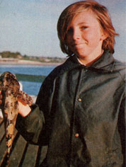
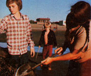
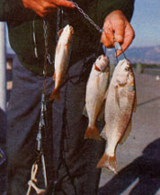
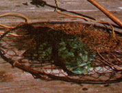
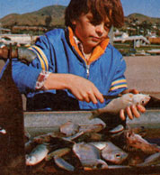
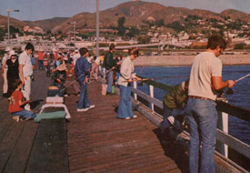

Jack McQuarrie reminds us that there are still inexpensive cures for fishin' fever.
There're no two ways about it . . . a store-bought fish dinner just can't match the flavorful goodness of a meal of piscatorial delicacies that you've caught yourself. Unfortunately, though, the sport of angling-like many forms of recreation -has been inflated and complicated to the point where anyone who buys enough gear to be considered well-equipped will also likely be well on his or her way to bankruptcy.
Worse yet, folks who do their fishing in salt water seem to bear an even heavier financial burden than do freshwater anglers. Big, high-powered boats, sophisticated fish-finding sonar sets, and jewel-bearinged reels often raise the effective per-pound price of the ocean fisherperson's catch to somewhere near that of pure gold!
There's a way to beat the high cost of snaring yourself a finny dinner, however. All you have to do is put aside complication-for complication's-sake and join the leisurely, happy-and productive world of the pier angler!
While in some eastern coastal states the pier fisherman or -woman may be required to purchase a fishing license and even shell out a dollar or two in order to obtain admittance to a promising dock or jetty (neither expense is likely to apply to folks fishing from public wharfs along most parts of the West Coast), pier fishing equipment can be just about as inexpensive as you want to make it. In fact, whatever tackle you happen to have in your garage-or even a simple handline made up of nothing more than cord, hook, bait, and sinker will do the job (make sure that your line is 20pound test or more, though, because there are likely to be a few "big'uns" lurking around your favorite pier).
The simplicity of most pier fishing gear doesn't mean that this back-to-basics angling won't fill your stringer, either. In fact, while folks who pursue salmon (a species which is a good example of "glamour" game fish) only average one-half fish per outing-according to fisheries statisticians-pier anglers (who regularly tie into such tasty bottomfish as cod, flounder, bass, or perch) average 2.44 fish every time they spend a day fishing! And as long as you don't mind the weather, or can dress to offset it, pier fishing is good all year round!
Several factors contribute to the good success ratio enjoyed by wharf anglers. For one thing, the shade provided by the large docks attracts fish . . . as the critters have no eyelids and like to get out of the sunlight on bright days. Then, too since most pier anglers clean their fish on the spot and return the innards to the ocean the water around such wharfs is rich in food.
And, though catches of bottomfish are common, a pier angler never knows just what might grab hold of his or her bait next! Large game fish often cruise such locations in search of the smaller species that congregate around the pilings, for instance, and the lucky angler can sometimes land a trophy that would put many of the fish caught on budget-breaking charter boat expeditions to shame!
PIER GROUP PLEASURE
The catch isn't everything, though, because piers are also wonderful places just to relax with your fishing rod and shed your everyday concerns. The atmosphere is usually a social one, and you'll find that most wharf anglers are gregarious sorts . . . always ready to share a net and a helping hand, a bit of "special" bait, and probably a little advice and instruction.
Many public piers also feature bait and tackle shops . . . where an angler who chooses to do so can-for a few dollars rent all the equipment he or she will need. If, however, you decide to purchase your own pier fishing outfit, the following guidelines will help you make sure that your choice of tackle is right for the job:
The best rod for pier angling is long (from 61/2 to 10 feet), flexible enough to cast well, and sturdy enough to discourage a lunker that's dead set on wrapping your line around a piling. Either a conventional casting or a spinning reel will work well . . . as long as it's wound with strong line (again, at least 20-pound test).
Most pier "pros" keep their bait in plastic buckets, and use a gunnysack (or a cooler) to haul their loot home. Another handy accessory is a drop net or gaff attached to a rope that will reach from the pier to a foot or so below the water level . . . to winch up any line-busting monsters you might catch.
The well-equipped pier angler will also carry a half-dozen sinkers (in weights ranging from two to six ounces), a variety of hooks, a pocketknife, a club to kill (quickly and humanely) his or her catch, a rag, and a pair of long-nosed pliers to remove hooks from the jaws of sharp-toothed species.
And, while you can buy bait at most piers, the savvy angler will find all the fish-enticing morsels he or she needs by simply foraging the beach at low tide. In fact, if I had to choose one all-around pier-fish lure, I wouldn't hesitate a minute before naming easily gathered pile worms. The critters can be found in mussel beds (or in the mud and gravel area between low and high tide lines). Besides holding a fatal fascination for most kinds of fish, pile worms (unlike the garden variety) have very tough skins . . . and it takes a fair bit of time for a "nibbler" to clean one off your hook.
Small mussels make good bait, too. Just remove 'em from the shell, turn the meat inside out (so the juices can "milk" into the water), and place it on your hook. Clams will also bring in the fish . . . especially if the bivalves are used while they're fresh. It's best to bait up with pieces of the "neck" or other tough portions of meat, though, to be sure your lure will stay on the hook long enough to attract a finny prize.
Of course, on the days when you want to concentrate on tryin' to tie into one of the big cod that often lurk around piers, you'll need an enticement that's more substantial than any worm, mussel, or clam. For such lunkers I use a number 3-0 hook and a whole herring for bait . . . fished on-or just a bit above-the ocean bottom.
Jigs and spoons will also tempt the big'uns if you simply lower the artificial lures to the bottom and then bounce 'em up and down. There's no need to buy a jig, either . . . just take a three-inch length of "pencil lead" sinker, bend it into a loose S-shape, and crimp its ends to your line just above the hook. The jury-rigged lure will work as well as any attracter that can be bought for $5.00-plus in a sporting goods store.
FROM PIER TO PLATTER
No matter how successful your day's fishing might be, the catch won't cook up as tasty as it ought to if you don't give it proper care. Fish should be cleaned as soon as possible-before you head for home-if they're to taste their delectable best. Many pier fisherfolk do their cleaning on the spot, and store the fish-with ice in a cooler or burlap sack. Should you want to wait until the day's angling is over and do all your cleaning at once, simply wrap your catches as you reel 'em in-in damp newspaper . . . and set the packaged fish in a shady spot on the pier until you're ready to do the job.
And-although some of the critters that you'll haul up from the deep won't look too tempting most fish that are caught from piers are every bit as nutritious and palate-pleasing as are the better-known game fish. In fact, many seafood fanciers prefer the flavor of bottomfish to that of "sport" species.
A cabezon, for example, isn't much to look at (as you can see in the accompanying photo). Even after the fish has been gutted and filleted, the raw meat has a decidedly unappetizing green color. The strange hue disappears when the meat is cooked, however, and the resulting delectable fillets are flaky, white, and similar to catfish in flavor.
Should you need advice on how to prepare your haul, you'll likely find your fellow pier fishers to be a treasurehouse of information. You can also consult a seafood cookbook ( if you don't own such a volume, your local library is sure to have several good ones on hand). And whether you serve your catch simply broiled with butter and lemon, or use it as the basis for a complicated gourmet masterpiece-the memories of your day of fun and companionship on the pier will add to the flavor of every bite!
|
 1Trophies such as this one can be hauled in on simple handlines and other inexpensive tackle. |
 Harvesting free-for-the takin' bait at low tide. Pile worms, mussels, clams and herrings all entise the big 'uns from the briny deep. |
 A string of piscatorial delicacies - just as palate-pleasing as game fish - destined for the dinner table |
|
 The cabezon: It's ugly - with a decidedly unappetizing greenish hue - but a seafood gourmet's delight |
 Gutting fish is an unpleasant - but necessary chore. Some angles clean fish as they catch it, while others prefer to wait until day's end and dress the entire catch. |
 Angles at a pier in Ventura, California try to hook some tasty bottomfish |